Datenschnitt für Diagramme
Graph-Data-Slicer
Neben dem Anwenden des Filters auf ein Arbeitsblatt (d. h. Datenschnitt für Arbeitsblatt) können Sie Filter auch direkt auf Diagramme anwenden (d. h. Datenschnitt für Diagramm).
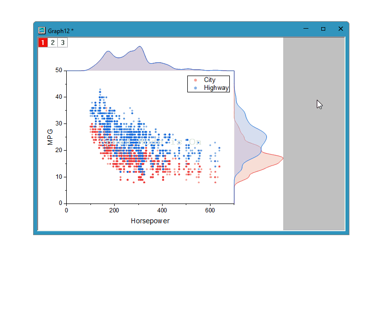
Datenschnitt für Arbeitsblatt vs. Datenschnitt für Diagramme
- Der ist ein arbeitsblattbasierter Filter. Er wird auf ein Arbeitsblatt angewendet und außerdem auf alle Diagramme, die auf Grundlage dieses Arbeitsblatts gezeichnet worden sind. Das Ändern der Filter (Bedingung oder Status Aktivieren/Deaktivieren) im Diagramm aktualisiert das Arbeitsblatt und alle Diagramme, die auf diesem Arbeitsblatt erstellt worden sind. Umgekehrt gilt das gleiche.
- Der ist ein diagrammbasierter Filter. Er wird nur auf das aktuelle Diagramm angewendet und berührt die Daten im Quellarbeitsblatt NICHT. Das heißt, dass der Filter im aktuellen Diagramm keinen Einfluss auf die anderen Diagramme hat, auch wenn sie alle auf Grundlage des gleichen Arbeitsblatt gezeichnet worden sind. Wenn Sie das Diagrammfenster, auf dem der Datenschnitt basiert, löschen, werden alle Analysen und Performances durch diesen Datenschnitt ebenfalls entfernt.
Wir empfehlen immer den Datenschnitt für Diagramme, nicht nur weil er sich das aktuelle Diagramm bezieht (und in diesem Sinn unabhängig ist vom Quellarbeitsblatt), sondern auch, weil er über mehr nützliche Funktionen verfügt, wie das Duplizieren von Zeichnungen für Vergleiche, und auch weiterhin verbessert werden wird.
Filter zu Diagramm hinzufügen
- wählen Sie im Menü Daten: Datenschnitte.
Oder
klicken Sie auf die Schaltfläche Datenfilter hinzufügen/entfernen auf der Symbolleiste Worksheet-Daten.
Oder
bewegen Sie die Maus über den Rand der Diagrammseite, bis sich der Cursor in 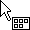
verwandelt. Klicken Sie einmal auf die leere Fläche. Dies ruft die Minisymbolleiste auf Seitenebene auf. Klicken Sie auf die Schaltfläche Datenschnitte.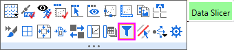
- Der Dialog Datenschnitt zu Diagramm hinzufügen wird geöffnet.
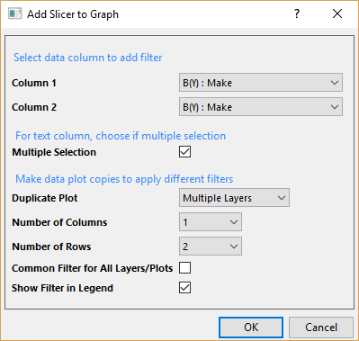
- Wählen Sie bis zu zwei Spalten, auf die die Filter angewendet werden sollen. Sie können später mehr Filter hinzuzufügen.
- Falls unter den ausgewählten Filterspalten Textspalten sind, können Sie Mehrfachauswahl aktivieren, um mehrere Elemente für die Filterbedingung auszuwählen. Sie können auch zwischen Einzelauswahl und Mehrfachauswahl wechseln, nachdem der Filter hinzugefügt wurde. Siehe Abschnitt unten.
Ein Filter für eine Text-/Kategoriespalte kann 2 Auswahltypen haben:
Einzelauswahl vs. Mehrfachauswahl
| Einzelauswahl
|
Mehrfachauswahl
|
| Eine Auswahlliste, um nur eine Kategorie gleichzeitig auszuwählen. |
Eine Auswahlliste, um mehrere Kategorien auszuwählen.
Das Diagramm wird automatisch aktualisiert, sobald Sie eine Kategorie ausgewählt/die Auswahl einer Kategorie aufgehoben haben.
Klicken Sie auf eine Stelle außerhalb der Liste, um die Auswahl abzuschließen. |
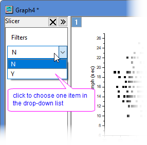
|
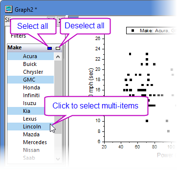 |
- Sie können Zeichnungen duplizieren, um verschiedene Filterbedingungen für intuitive Vergleiche anzuwenden.
| Zeichnung duplizieren |
- Es wird keine Zeichnung dupliziert.
- Zeichnungen im gleichen Layer werden dupliziert. Bei Grafiken mit mehreren Layern ist nur diese Option für das Duplizieren verfügbar.
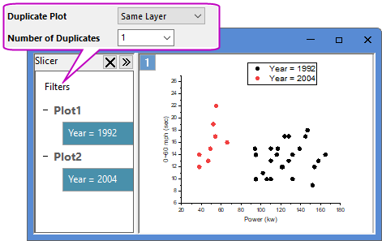
- Zeichnungen werden in mehreren Layern dupliziert. Diese Option ist nur für Grafiken mit einzelnem Layer verfügbar.
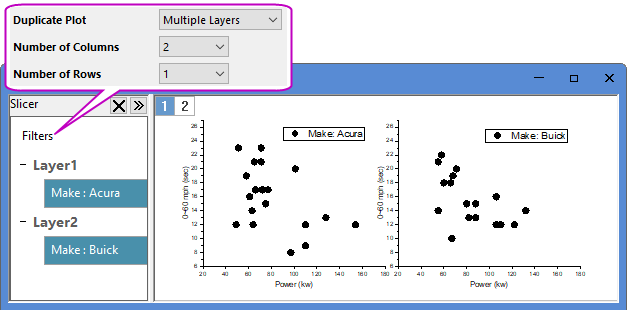
|
| Anzahl der Duplikate |
Wenn Sie wählen, Zeichnungen zu duplizieren im Gleichen Layer, verwenden Sie dieses Bearbeitungsfeld, um die Anzahl der duplizierten Zeichnungen festzulegen.
|
Anzahl der Spalten/
Anzahl der Zeilen |
Wenn Sie wählen, Zeichnungen zu duplizieren in Mehreren Layern, verwenden Sie diese zwei Auswahllisten, um die Anzahl der Duplikate und das Felderlayout zu bestimmen. Beachten Sie, dass die Anzahl der Duplikate die Anzahl der Spalten X Anzahl der Zeilen - 1 ist.
|
| Allgemeine Filter für alle Layer/Zeichnungen |
Bei Grafiken mit mehreren Layern werden ALLE Filter, die Sie im Dialog Datenschnitt zu Diagramm hinzufügen definiert haben, auf ALLE Layer angewendet. Aktivieren Sie dieses Kontrollkästchen, um eine allgemeine Filtersteuerung für alle Layer einzurichten. Auf diese Weise wird auf alle Layer die gleiche Filterbedingung angewendet.
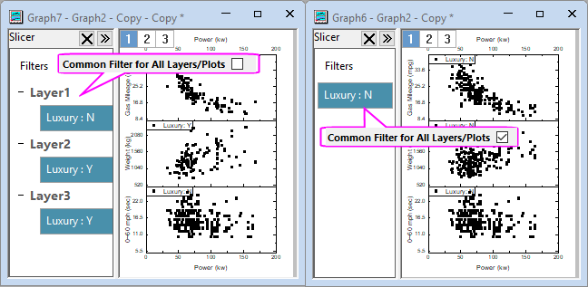
Ansonsten hat jeder Layer seine eigene Filtersteuerung. In diesem Fall sind Filter auf einem Layer unabhängig von anderen Layern. Das heißt, Sie können unterschiedliche Filterbedingungen für verschiedene Layer festlegen. Sie können auch einen vorhandenen Filter entfernen oder neue Filter für einen Layer hinzufügen, aber nicht die anderen Layer berühren.
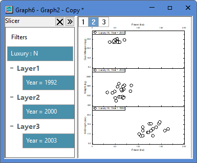
|
| Filter in Legende zeigen |
Aktivieren Sie dieses Kontrollkästchen, um die aktuellen Filterinfos in der Legende zu zeigen. Die Legende wird automatisch aktualisiert, wenn sich die Filterbedingung ändern. Beachten Sie, dass Sie Filterinfos auch zum Layertitel hinzufügen können, indem Sie auf die Schaltfläche Layerfilter auf der Minisymbolleiste (Seitenebene) klicken.
|
- Das Feld Datenschnitt wird links vom Diagrammfenster angezeigt und listet die von Ihnen eingerichteten Filter auf. Das Diagramm wird entsprechend gefiltert. Sie können die aktuelle Filterbedingung anzeigen und ändern, mehr Filter hinzufügen, vorhandene Filter entfernen oder sie neu ordnen. Im nächsten Abschnitt finden Sie weitere Einzelheiten.
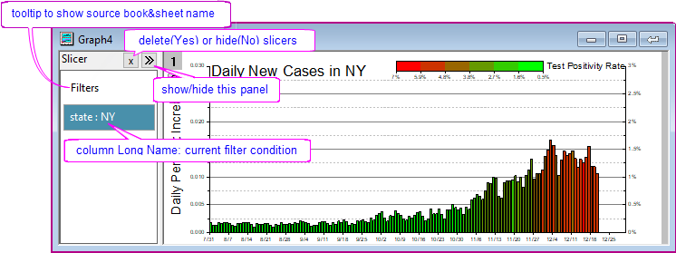
| Wenn das Quellarbeitsblatt (aus dem das Diagramm erstellt wurde) einen oder mehr Filter hat, werden die Filter, unabhängig davon, ob der Filter aktiviert ist oder nicht, im Diagrammfenster gezeigt. Das Bedienfeld des Datenschnitts ist links vom Diagrammfenster zu sehen und führt alle vorhandenen Datenschnitte für das Arbeitsblatt auf. In diesem Fall KÖNNEN Sie KEINEN neuen Filter (weder Arbeitsblatt- noch Diagrammdatenschnitt) zur Grafik hinzufügen. Sie können nur die vorhandenen Filter anzeigen und bearbeiten. Mehr über die verfügbaren Ausgaben finden Sie im nächsten Abschnitt. |
Filter bearbeiten
Allgemeine Bedienelemente
- Klicken Sie mit der rechten Maustaste auf einen Filter und wählen Sie An das Ende verschieben/An den Anfang verschieben.
Datenschnitt für ein Diagramm:
- Klicken Sie mit der rechten Maustaste auf eine leere Fläche und wählen Sie Filter für Spalte hinzufügen. Wählen Sie eine Spalte im Popup-Dialog und setzen Sie die Filterbedingungen.
- Klicken Sie mit der rechten Maustaste auf einen Filter und wählen Sie Filter löschen. Oder klicken Sie auf die Schaltfläche Datenfilter hinzufügen/entfernen auf der Symbolleiste Worksheet-Daten, um ALLE Datenschnitte auf dem aktuellen Diagrammfenster zu entfernen.
Beachten Sie, dass sämtliche Analysen, die aus Datenschnitten abgeleitet wurden, auch entfernt werden.
- Klicken Sie auf den Rand der Diagrammseite, um die Symbolleiste auf Seitenebene anzuzeigen, und klicken Sie dann auf die Schaltfläche Filter zum Layertitel hinzufügen , um einen Layertitel mit Filterbedingungen für alle Layer in der Grafik hinzuzufügen. Der Titel wird automatisch aktualisiert, wenn die Filterbedingung geändert wird.
Datenschnitt für Arbeitsblatt:
- Klicken Sie mit der rechten Maustaste auf einen Filter und wählen Sie Filter deaktivieren. Der Filter wird deaktiviert und abgeblendet. (Beachten Sie, dass Filter im Quellarbeitsblatt auch deaktiviert sind). Klicken Sie mit der rechten Maustaste auf einen deaktivierten Filter und wählen Sie Filter aktivieren, um ihn erneut zu aktivieren.
- : Klicken Sie mit der rechten Maustaste auf einen Filter und wählen Sie Filter verbergen. Der Filter wird im Bedienfeld Datenschnitt unsichtbar. (Beachten Sie, dass die Filter im Quellarbeitsblatt noch aktiviert sind). Klicken Sie mit der rechten Maustaste auf eine leere Fläche und wählen Sie Alle Filter zeigen, um alle verborgenen Filter zu zeigen.
- Denken Sie daran, dass jegliche Änderungen an einem Filter (Bedingung oder Status Aktivieren/Deaktivieren) im Diagramm nicht nur das Diagramm, sondern auch das Qellarbeitsblatt aktualisiert. Umgekehrt gilt das gleiche.
Filterbedingungen bearbeiten
Es werden verschiedene Optionen zur Verfügung gestellt gemäß dem Format der Spalte, auf die der Filter angewendet wird.
Text & Kategorial
- Der Filter auf einer Text-/Kategoriespalte ist standardmäßig auf Einzelauswahl gesetzt. Klicken Sie mit der rechten Maustaste auf den Filter, um zwischen Einzelauswahl und Mehrfachauswahl zu wechseln.
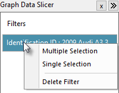
- Beachten Sie, dass der Datenschnitt für das Arbeitsblatt standardmäßig auf Auto gesetzt ist, wodurch Mehrfachauswahl ausgewählt ist, falls die Spalte mehrere Kategorien enthält, und Einzelauswahl, falls es nur eine Kategorie ist, und <Zuletzt verwendet> folgt, nachdem Sie manuell einen Typ gewählt haben.
- Klicken Sie mit der rechten Maustaste auf den Filter und wählen Sie Filterspalte ändern, um eine neue Spalte auszuwählen und einen Filter einzurichten.
Numerisch
- Klicken Sie mit der linken Maustaste auf einen Filter oder klicken Sie mit der rechten Maustaste und wählen Sie Bedingungstyp ändern, um die Filterbedingung zu bearbeiten. Klicken Sie mit der rechten Maustaste auf einen numerischen Filter und wählen Sie eine Bedingung aus der Popup-Liste. Auf dieser Seite finden Sie Anweisungen zum Einrichten eines numerischen Filters.
- Wählen Sie Laden, um eine gespeicherte Filterbedingung zu laden.
Datum & Zeit
- Klicken Sie mit der rechten Maustaste auf einen Datenfilter und wählen Sie eine Bedingung aus der Popup-Liste. Auf dieser Seite finden Sie Anweisungen zum Einrichten eines Datenfilters.
- Wählen Sie Laden, um eine gespeicherte Filterbedingung zu laden.
Diagramm mit Datenfilter untersuchen
Analyse eines Diagramms mit dem Datenschnitt
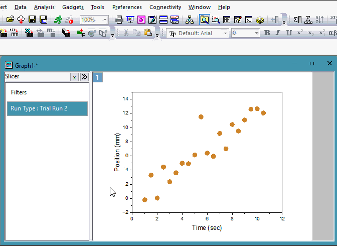
Dinge, die Sie wissen müssen ...
- Wenn Sie möchten, dass Ihre Analyseergebnisse bei jeder Änderung der Filterbedingung neuberechnet werden, müssen Sie den Datenschnitt VOR Durchführung der Analyseoperation hinzufügen. Wenn Sie zum Beispiel das angepasste Kurvendiagramm aus dem Berichtsblatt der linearen Anpassung öffnen
und einen Datenschnitt hinzuzufügen, werden die Ergebnisse der Anpassungsergebnisse NICHT aktualisiert, wenn Sie die Filterbedingung ändern.
- Jegliche Analysen, die für ein Diagramm mit Datenschnitt(en) durchgeführt wurden, basieren auf den gefilterten Daten und unabhängig von den Quelldaten. Die Analyseergebnisse werden in einer verborgenen Arbeitsmappe ausgegeben, die aktiviert werden kann, indem auf das grüne Schloss der Analyse geklickt und Gehe zu Ergebnissen gewählt wird. Durch Klicken auf das grüne Schloss im Berichtsblatt oder auf den Link in der Tabelle der Notizen > Zelle Datenfilter gelangen Sie zum Quelldiagramm.
- Denken Sie daran, dass das Löschen des Diagrammfensters alle Operationsausgaben, die auf dem Diagrammdatenfilter basieren, löschen.
- Wenn Sie Analysen für ein Diagramm mit Datenschnitt durchführen, wird durch das Duplizieren des Diagramm ein Dialog angezeigt, der Sie fragt, ob Sie die Analyseoperationen und -ausgaben einschließen möchten.
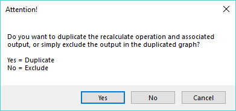
- Klicken Sie auf Ja, um sowohl Diagramm als auch Analyse (Operationen und verbundene Ausgaben) zu duplizieren. In diesem Fall aktualisiert das Ändern der Filterbedingung oder Analyseparameter nur das aktuelle Diagrammfenster, aber hat keine Wirkung auf das andere Fenster.
- Klicken Sie auf Nein, um nur das Diagramn, jedoch nicht die Analyse zu duplizieren.